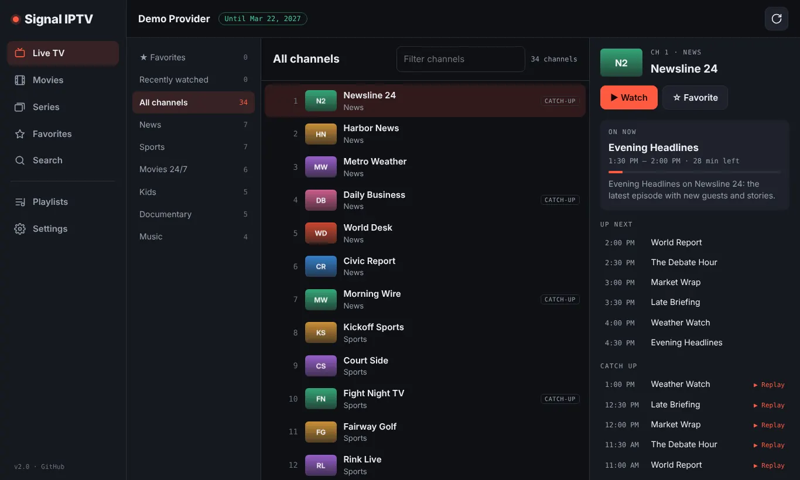
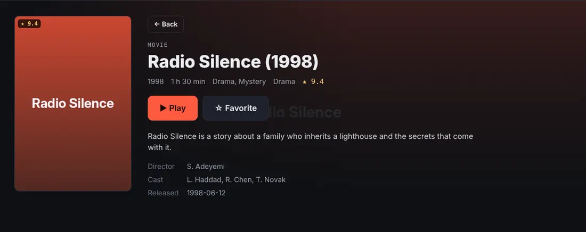
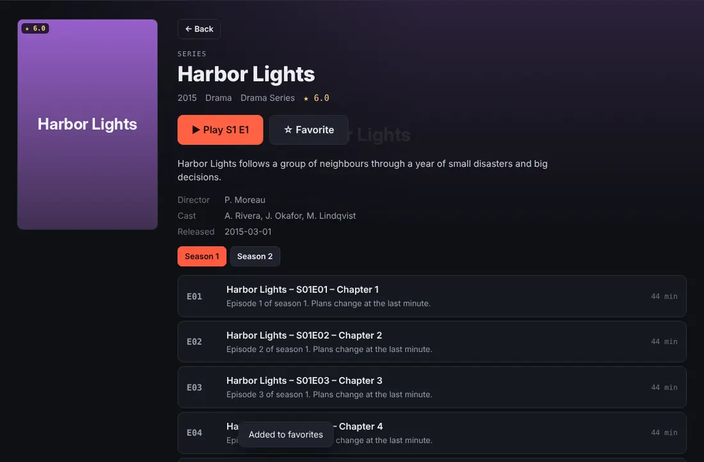
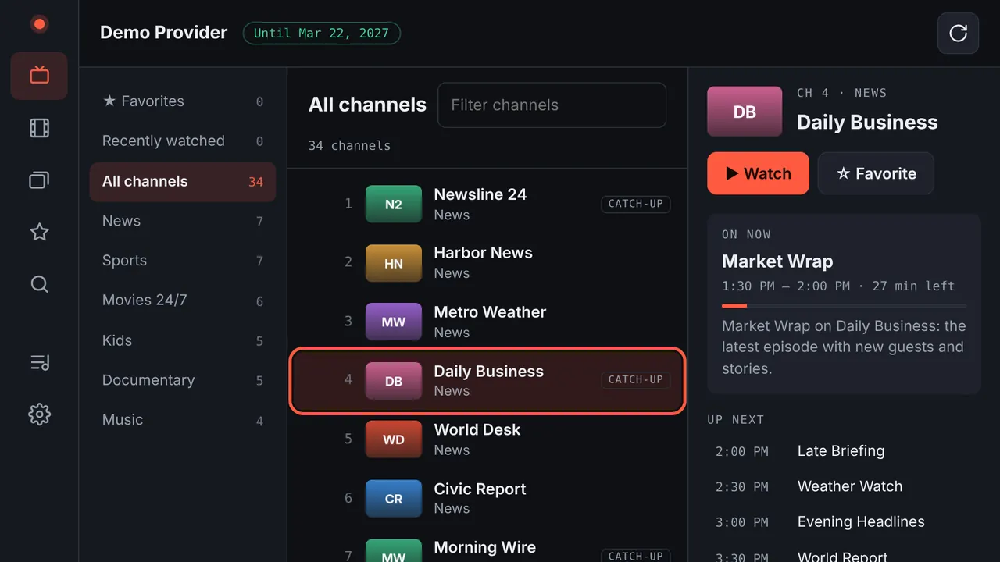
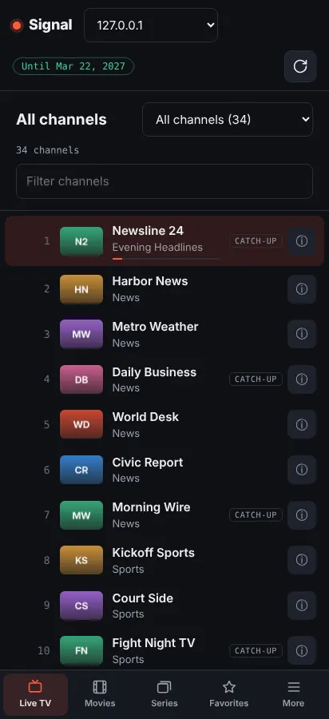
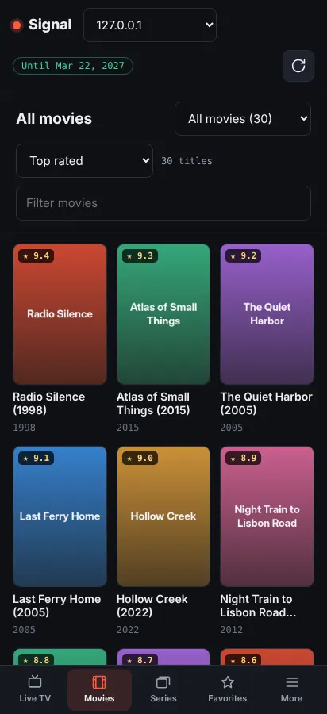

Version 2.0 · Android, tablets & Android TV
Your playlist, live on every screen.
Signal IPTV plays live TV, movies and series from your M3U playlist or Xtream Codes login, with a built-in TV guide, catch-up and resume where you left off.

Screens show sample channels from a test provider.
What’s on in 2.0
Everything an IPTV player should do
Laid out the way you already read TV: by channel, by time slot.
Channel groups
Categories, favorites, recently watched and a quick filter.
What’s on now
Now, next and a progress bar for every channel with a guide.
Catch-up
Replay shows from the last days when your provider keeps them.
Poster library
Browse by category, sort by recently added, A–Z, rating or release year.
Resume & continue watching
Stop anytime. Signal picks up at the same second, on the same device.
Seasons & episodes
Plot, cast and episode lists with watched marks.
Next episode
Plays the following episode automatically.
Search
Find channels, movies, series and shows on now.
Xtream Codes
Server, username and password, with account expiry shown.
M3U links & files
Plus free public channel lists to try it out.
Backup & restore
Move playlists and favorites to another device.
Swipe the guide sideways to see every slot →
Add your playlist
Three ways in, one minute each
Use the details your TV provider sent you. Signal works out the rest, and loads movies and series too when your login includes them.
Xtream Codes login
Enter the server address, username and password. Live TV, movies, series, catch-up and the provider’s TV guide all come from one login.
M3U playlist link
Paste a link ending in .m3u or .m3u8. A get.php link is switched to an Xtream login automatically.
Playlist file
Open an M3U file saved on your device. Add an XMLTV guide link for what’s on now and next.
The player
Built on Android’s own video engine
Signal 2.0 plays through Media3, the same engine behind most Android video apps. It opens the stream formats IPTV providers actually use, and it doesn’t need the provider’s permission to play in a web page.
- FormatsHLS (.m3u8), MPEG-TS (.ts), MP4, MKV
- AudioChoose the audio track or language
- SubtitlesTurn on embedded subtitles in any available language
- ControlsPause, ±10 s seek, speed from 0.5× to 2×
- PictureFit, stretch or zoom to fill the screen
- Live TVChannel up and down without leaving the player
- TuningBuffer size and a custom user agent for picky providers

Movies & series
Pick up exactly where you stopped
Each movie and episode remembers its position. Continue watching sits at the top of the library, finished episodes get a check mark, and the next one starts on its own.

Devices
One app, couch to commute
On a TV, every screen works with the arrow keys and OK button of your remote, and Signal appears in the Android TV app row. On a phone, sections move to a tab bar at the bottom.



Install
Watching in three steps
Download the app
Get SignalIPTV.apk on your phone or TV box. On Android TV, the free Downloader app can fetch it from the link below.
Allow the install
Open the file and allow installs from your browser or file manager. If Play Protect asks, tap Install anyway; the app isn’t from the Play Store yet.
Add your playlist
Choose Xtream Codes, M3U link or file, enter what your provider sent you, and your channels appear.
Free download
Get Signal IPTV 2.0
One APK for phones, tablets and Android TV. Updates install over the old version.
Questions
Before you install
Does Signal IPTV come with channels?
No. Signal is a player. It plays the playlists and logins you get from your TV provider, plus free public lists of channels that broadcasters stream openly. Only use playlists for content you have the right to watch.
Is it really free?
Yes. There’s no subscription, no account and no ads.
Where is my provider login stored?
Only on your device. Signal sends your username and password to the server you entered and nowhere else. The privacy policy has the details.
Which login types work?
Xtream Codes (server, username, password), M3U and M3U8 links, M3U files, and get.php links. Stalker portal (MAC address) logins aren’t supported.
Does catch-up work with every provider?
Catch-up appears on channels where your provider keeps past programmes, marked with a Catch-up tag. Pick a programme from the channel’s schedule to replay it.
Can I use it on Android TV or a TV box?
Yes. Install the same APK. Every screen works with the remote’s arrow keys, OK and Back buttons, and up and down change channel while you watch.
A channel won’t play. What can I try?
Some streams are offline or limited to certain countries. Try the next channel. If none of your provider’s live channels start, go to Settings and switch the Xtream live format to MPEG-TS, or set the user agent your provider recommends.
What about Samsung, LG or iPhone?
Not yet. Signal 2.0 runs on Android devices, including Android TV and Google TV.